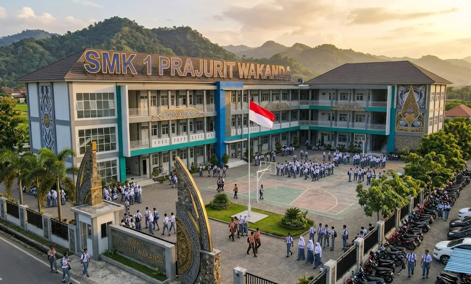
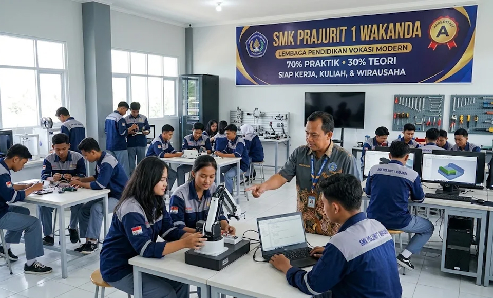
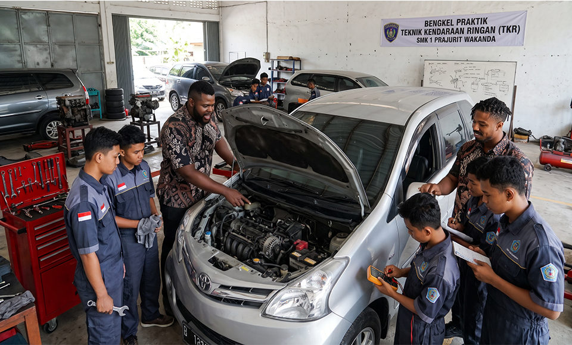

RPL
Rekayasa Perangkat Lunak
Mempelajari pemrograman web, aplikasi mobile, basis data, serta rekayasa sistem perangkat lunak modern.
Detail Jurusan →Selamat Datang di
Unggul, Terampil, Berprestasi. Mencetak generasi vokasi yang kompeten di bidang teknologi informasi, rekayasa otomotif, dan desain kreatif.


Berdiri sejak tahun 2004 dan menyandang status Akreditasi A (Unggul), SMK PRAJURIT 1 WAKANDA hadir sebagai pusat pengembangan pendidikan kejuruan yang memadukan penguasaan teknologi terkini, etos kerja profesional, dan pembinaan karakter disiplin.
Melalui porsi pembelajaran 70% praktik kejuruan dan 30% penguatan teori, peserta didik dibimbing langsung oleh tenaga pendidik bersertifikat dan praktisi industri untuk siap bekerja, melanjutkan kuliah, maupun berwirausaha mandiri.
Empat pilihan jurusan kejuruan yang dirancang sesuai kebutuhan dunia usaha dan dunia industri masa kini.
Mempelajari pemrograman web, aplikasi mobile, basis data, serta rekayasa sistem perangkat lunak modern.
Detail Jurusan →
Fokus pada perakitan komputer, administrasi server, jaringan fiber optik, dan keamanan infrastruktur siber.
Detail Jurusan →
Mendalami perawatan mesin otomotif, sistem kelistrikan kendaraan, sasis, serta teknologi injeksi modern.
Detail Jurusan →
Mengasah kreativitas desain grafis, ilustrasi digital, fotografi, videografi, serta produksi media komunikasi.
Detail Jurusan →Lingkungan belajar yang kondusif untuk menumbuhkan bakat, keterampilan praktis, dan kesiapan karier siswa.
Materi pembelajaran disusun bersama praktisi industri sehingga selaras dengan kebutuhan dunia kerja nyata.
Setiap jurusan memiliki laboratorium dan bengkel mandiri dengan peralatan praktik yang terus diperbarui.
Pendampingan magang dan penyaluran kerja lulusan ke puluhan perusahaan mitra di tingkat regional maupun nasional.
Lebih dari 18 kegiatan ekstrakurikuler aktif mendukung prestasi olahraga, seni, teknologi, dan kepemimpinan siswa.
Bergabunglah bersama SMK PRAJURIT 1 WAKANDA dan kembangkan potensi terbaikmu menjadi tenaga profesional yang unggul, terampil, dan berprestasi.